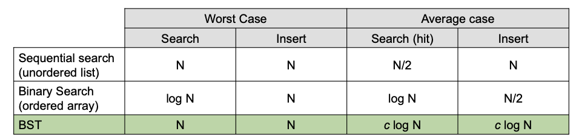

symbol table¶
- abstract data type to handle key-value pairs
- also known as
associative array,dictionaryormap - basic operations
put(key, value): insert a value with a specified keyget(key): given a key, search for the corresponding value- common assumptions
- keys are unique
- values are not
null - keys have a total order relation:
- antisymmetry: if \(a \leq b\) and \(b \leq a\) then \(a = b\)
- transitivity: if \(a \leq b\) and \(b \leq c\) then \(a \leq c\)
- totality: \(a \leq b\) or \(b \leq a\)
elementary implementation of symbol table¶
linked list & sequential search¶
- data structure: unordered linked list of key-value pairs
get(key): scan through the list until a matching key is foundput(key, value): scan through the list- if a matching key is found, replace the associated value
- if a matching key is not found, add the
(key, value)pair to the front of the list - cost: \(N\) for both
getandput
ordered array & binary search¶
- data structure: ordered array of keys, plus another array of their associated values
get(key): binary search onKeys[], then lookup inValues[]put(key, value): binary search onKeys[]- if a matching key is found, replace the associated value
- if a matching key is not found, use insertion sort (need to shift all greater key/value pairs over)
- cost: \(\log N\) for
get, \(N\) forput
binary search tree¶
- a tree is a non-linear abstract data type that can be either:
- empty
- a tree consisting of one node called the root, and zero or one or more disjoint (sub)trees, called children
- a binary tree is a tree where each node has at most two children (referred to as left child and right child)
- a binary tree is in
symmetric orderif each node has a key, and every node's key is: - larger than all keys in its left subtree
- smaller than all keys in its right subtree
- a binary search tree is a binary tree in symmetric order
BST implementation¶
nodeobject containskeyvalue- link to
leftnode - link to
rightnode get(key):- if
key == node.key, hit - if
key < node.key, go left - if
key > node.key, go right put(key, value):- if
key == node.key, updatenode.value = value - if
key < node.key, go left - if
key > node.key, go right - if
null, insert new node
BST pseudocode¶
class Node:
def __init__(self, key, value):
self.key = key
self.value = value
self.left = None
self.right = None
def get(self, key):
if self.key == key:
return self.value
elif key < self.key amd self.left:
reutrn self.left.get(key)
elif key > self.key and self.right:
return self.right.get(key)
else:
return None
def put(self, key, value):
if key == self.key:
self.value = value
elif key < self.key:
if self.left is None:
self.left = Node(key, value)
else:
self.left.put(key, value)
elif key > self.key:
if self.right is None:
self.right = Node(key, value)
else:
self.right.put(key, value)
BST analysis¶
- cost (number of compare operations)
get: \(1 + D(t)\) (depth of tree)put: \(1 + D(t)\) (depth of tree)- tree shape depends on order of insertion
- may BSTs correspond to the same set of keys

{kind=link}
Based on your PDF slides, here is the completion of your revision guide, covering the extended API, Deletion, 2-3 Trees, and Red-Black BSTs.
BST Implementation of Ordered Operations¶
- Min: Smallest key. Found by traversing to the left-most node.
- Max: Largest key. Found by traversing to the right-most node.
- Floor: Largest key \(\leq\) a given key.
- Ceiling: Smallest key \(\geq\) a given key.
- In-order Traversal: Yields keys in ascending order.
- Traverse left subtree.
- Enqueue/Process current key.
- Traverse right subtree.
Extended API Cost Comparison¶
| Operation | Unordered List | Sorted Array | BST (average) |
|---|---|---|---|
| Search (get) | \(N\) | \(\lg N\) | \(\lg N\) |
| Insert (put) | \(N\) | \(N\) | \(\lg N\) |
| Min/Max | \(N\) | \(1\) | \(\lg N\) |
| Floor/Ceiling | \(N\) | \(\lg N\) | \(\lg N\) |
| Delete | \(N\) | \(N\) | \(\lg N\) |
BST Implementation of Delete¶
Delete Minimum¶
- Traverse: Go left until finding a node with a
nullleft link. - Replace: Replace that node with its own right child.
- Pseudocode:
Hibbard Deletion¶
To delete a node with a specific key:
- Case 0 (No children): Set parent link to null.
- Case 1 (1 child): Replace parent link with the link to the child.
- Case 2 (2 children):
1. Find successor \(x\) of node \(t\) (the minimum key in \(t\)'s right subtree).
2. Delete the minimum key in \(t\)'s right subtree (which is \(x\)).
3. Put \(x\) in \(t\)'s spot.
Balanced Search Tree: 2-3 Search Tree¶
- A tree where each node is either:
- 2-node: One key, two children (smaller keys left, larger keys right).
- 3-node: Two keys, three children (smaller left, middle between the two keys, larger right).
- Invariants:
- Symmetric order: In-order traversal yields keys in ascending order.
- Perfect balance: Every path from the root to a
nulllink has the same length.
2-3 Tree Operations¶
- Search: Compare key against those in a node; follow the associated interval link recursively.
- Insertion:
- Into a 2-node: Transform the 2-node into a 3-node.
- Into a 3-node: Create a temporary 4-node, move the middle key into the parent, and split the remaining keys into two 2-nodes. Repeat up the tree as necessary.
Performance¶
- Tree Height:
- Worst case: \(\lg N\) (all 2-nodes).
- Best case: \(\log_3 N \approx 0.63 \lg N\) (all 3-nodes).
- Guaranteed Logarithmic Performance: \(c \lg N\) for all operations.
Red-Black Binary Search Tree (LLRB)¶
- Key Idea: Represent a 2-3 tree as a standard BST by using "internal" red links to connect two 2-nodes to represent a single 3-node.
- Definition of Left-Leaning Red-Black (LLRB) BST:
- Every path from root to
nullhas the same number of black links (perfect black balance). - No node has two red links connected to it.
- Red links lean left.
Supporting Operations¶
- Left Rotation: Orient a temporary right-leaning red link to lean left.
- Right Rotation: Orient a left-leaning red link to temporarily lean right (used during balancing).
- Color Flip: Recolor to split a temporary 4-node (both children are red).
LLRB Pseudocode (Insert)¶
def put(n, key, value):
if n is None: return Node(key, value, RED)
# Standard BST insertion logic here...
# 1. Right child red, left child black -> rotate left
if isRed(n.right) and not isRed(n.left): n = rotateLeft(n)
# 2. Left child and left-left grandchild red -> rotate right
if isRed(n.left) and isRed(n.left.left): n = rotateRight(n)
# 3. Both children red -> flip colors
if isRed(n.left) and isRed(n.right): flipColors(n)
return n
Performance Analysis¶
- Height of LLRB BST is \(\leq 2 \lg N\) in the worst case.
- Search/Insert/Delete are all \(O(\log N)\).
Final Implementation Summary¶
| Data Structure | Search (Worst) | Insert (Worst) | Delete (Worst) | Search (Avg) |
|---|---|---|---|---|
| Sequential Search | \(N\) | \(N\) | \(N\) | \(N/2\) |
| Binary Search | \(\lg N\) | \(N\) | \(N\) | \(\lg N\) |
| BST | \(N\) | \(N\) | \(N\) | \(c \lg N\) |
| 2-3 Tree | \(c \lg N\) | \(c \lg N\) | \(c \lg N\) | \(c \lg N\) |
| LLRB BST | \(2 \lg N\) | \(2 \lg N\) | \(2 \lg N\) | \(1 \lg N\) |